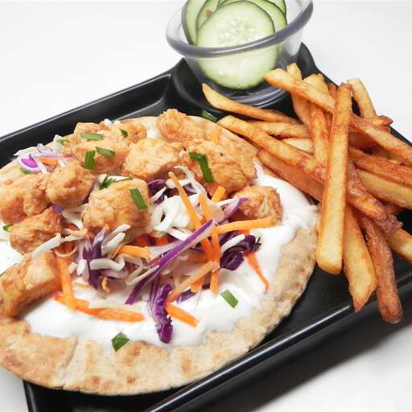

7 SHAWARMA
CHICKEN SHAWARMA

Shawarma is a Levantine Arab meat preparation, where meat is placed on a spit and may be grilled for as long as a day. Shawarma can be served with various toppings and vegetables such as tahini, hummus, amba, or pickled cucumbers. It is mostly wrapped in pita bread. As most of us don't have a rotating spit at homes, this recipe is cooked on the stovetop. After all, in this fast life who is gonna wait for a whole day?
INGREDIENTS
Marinade
- 3 tablespoons Greek yogurt
- 3 tablespoons chile sauce
- 2 tablespoons white vinegar
- 2 tablespoons barbeque sauce (such as HP®)
- 1 tablespoon dark soy sauce
- 4 cloves garlic,minced
- ½ teaspoon ground white pepper
- 1 pinch ground cinnamon
- 1 pound boneless chicken breast, cut into cubes
Sauce
- ½ cup Greek yogurt
- 3 tablespoons tahini
- 2 tablespoons lemon juice
- 2 cloves garlic, chopped
- ½ teaspoon ground white pepper
- ½ teaspoon salt
Sandwich
- ¼ cup cooking oil
- 6 pita bread rounds
- ½ head cabbage, finely shredded
- 1 onion, cut into matchstick-size pieces
- 2 pickled cucumbers, sliced
STEPS
- Combine 3 tablespoons Greek yogurt, chile sauce, vinegar, barbeque sauce, soy sauce, minced garlic, 1/2 teaspoon white pepper, black pepper, and cinnamon in a bowl; add chicken. Marinate chicken in the refrigerator for at least 30 minutes.
- Mix 1/2 cup Greek yogurt, tahini, lemon juice, chopped garlic, 1/2 teaspoon white pepper, and salt in a bowl until sauce is smooth.
- Heat cooking oil in a skillet or wok over high heat; add chicken. Cook and stir until chicken is no longer pink in the center and juices run clear, 12 to 15 minutes.
- Toast pita bread on a flat pan or skillet over medium heat until golden, 1 to 2 minutes per side.
- Spread sauce on pita bread (or make pocket in the pita and spread sauce inside). Layer chicken, cabbage, onion, and pickles over sauce. Fold or wrap sandwiches with aluminum foil or parchment paper.